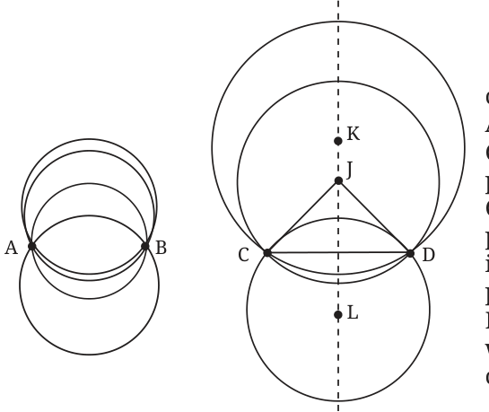
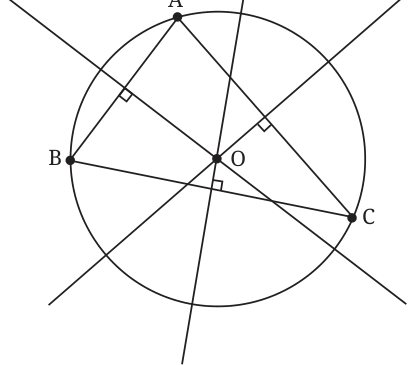
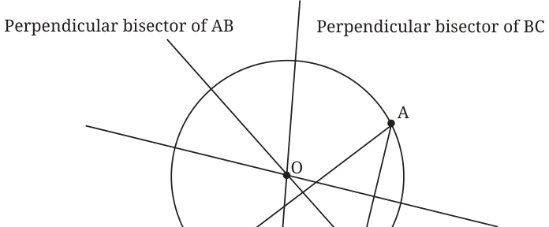
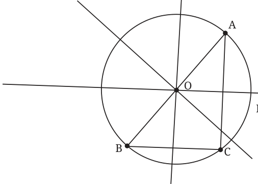

<!DOCTYPE html>
<html lang="en">
<head>
<meta charset="UTF-8">
<meta name="viewport" content="width=device-width,initial-scale=1">
<title>5.3 How Many Circles? — Im Up and Down and Round and Round</title>
<meta name="description" content="Class 9 Mathematics · Im Up and Down and Round and Round · 5.3 How Many Circles?">
<link rel="icon" href="data:image/svg+xml,<svg xmlns='http://www.w3.org/2000/svg' viewBox='0 0 100 100'><text y='.9em' font-size='90'>📘</text></svg>">
<link rel="stylesheet" href="../../../assets/book.css">
<link rel="stylesheet" href="https://cdn.jsdelivr.net/npm/katex@0.16.11/dist/katex.min.css" crossorigin="anonymous">
</head>
<body>
<header class="topbar">
<div class="topbar-in">
  <div class="crumb">
    <span class="c1"><a href="../../../index.html">Library</a> · <a href="../../index.html">Class 9 Mathematics</a></span>
    <span class="c2">Im Up and Down and Round and Round · 5.3 How Many Circles?</span>
  </div>
  <a class="tb-btn" data-nav="prev" href="../../05-im-up-and-down-and-round-and-round/03-symmetries-of-a-circle-5.2/index.html" title="5.2 Symmetries of a Circle">←</a>
  <details class="drawer"><summary class="tb-btn" title="Sections in this chapter">☰</summary>
<div class="drawer-panel"><div class="dh">Im Up and Down and Round and Round</div><a href="../01-chapter-opener/index.html">Chapter opener</a><a href="../02-definitions-5.1/index.html">5.1 Definitions</a><a href="../03-symmetries-of-a-circle-5.2/index.html">5.2 Symmetries of a Circle</a><a href="../04-how-many-circles-5.3/index.html" aria-current="page">5.3 How Many Circles?</a><a href="../05-exercise-5.1/index.html">Exercise 5.1</a><a href="../06-chords-and-the-angles-they-subtend-5.4/index.html">5.4 Chords and the Angles They Subtend</a><a href="../07-exercise-5.2/index.html">Exercise 5.2</a><a href="../08-midpoints-and-perpendicular-bisectors-of-chords-5.5/index.html">5.5 Midpoints and Perpendicular Bisectors of Chords</a><a href="../09-exercise-5.3/index.html">Exercise 5.3</a><a href="../10-distance-of-chords-from-the-centre-5.6/index.html">5.6 Distance of Chords from the Centre</a><a href="../11-exercise-5.4/index.html">Exercise 5.4</a><a href="../12-which-of-the-two-unequal-chords-is-farther-from-the-5.6.1/index.html">5.6.1 Which of the two unequal chords is farther from the</a><a href="../13-exercise-5.5/index.html">Exercise 5.5</a><a href="../14-angles-subtended-by-an-arc-5.7/index.html">5.7 Angles Subtended by an Arc</a><a href="../15-exercise-5.6/index.html">Exercise 5.6</a><a href="../16-concyclicity-of-points-5.8/index.html">5.8 Concyclicity of Points</a></div></details>
  <a class="tb-btn" data-nav="next" href="../../05-im-up-and-down-and-round-and-round/05-exercise-5.1/index.html" title="Exercise 5.1">→</a>
  <button class="tb-btn" data-theme-toggle title="Toggle light / dark" aria-label="Toggle light or dark theme">◐</button>
</div>
<div class="progress"><span style="width:51.6%"></span></div>
</header>
<main class="wrap">
<div class="sec-head">
  <p class="eyebrow"><a href="../index.html">Chapter 5 · Im Up and Down and Round and Round</a></p>
  <h1>5.3 How Many Circles?</h1>
  <p class="sec-meta">Textbook pages 3–7 · 6 figures</p>
</div>
<article class="prose">
<p>Now that we have defined a circle and listed some of its properties, let us ask this question: Given two points A and B on a plane, how many circles pass through A and B? If a circle passes through A and B, it has a centre, say O. The lengths OA and OB are equal. Is there another point with this property? Yes, the midpoint of segment AB. With the midpoint as centre, a circle passing through A and B can be drawn. Its radius is half the length of AB, and AB is a diameter.</p>
<p>Are there more circles passing through both A and B? Clearly, any point equidistant from A and B can be the centre of a circle passing through A and B. Do you know of such points? We have seen that the perpendicular bisector of the line segment AB is the locus of points equidistant from A and B. Every point on the perpendicular bisector is equidistant from A and B, and every point that is equidistant from A and B is on the perpendicular bisector! So, the centres of all circles through A and B lie on the perpendicular bisector of AB.</p>
<figure class="fig"><figcaption>Fig. 5.4: Circles through two points</figcaption></figure>
<aside class="sidenote"><p>In Fig. 5.4, we see circles through points A and B, and through and D, and the perpendicular bisector of CD. Every point on the perpendicular bisector is the centre of a circle passing through C and D. So we have circles with centres K, J and L containing points C and D.</p></aside>
<h2 id="s-think-and-reflect">Think and Reflect</h2>
<ul class="qlist">
<li><span class="mk">1.</span><span class="lt">How many circles pass through two points on a plane?</span></li>
<li><span class="mk">2.</span><span class="lt">Are there circles of all possible radii passing through A and B? What is</span></li>
</ul>
<p>the radius of the smallest circle passing through A and B? What is the radius of the largest circle passing through A and B?</p>
<ul class="qlist">
<li><span class="mk">3.</span><span class="lt">As you move away from segment AB along its perpendicular bisector,</span></li>
</ul>
<p>do the radii of the circles containing A and B increase or decrease?</p>
<ul class="qlist">
<li><span class="mk">4.</span><span class="lt">As you go along the perpendicular bisector, will the circle drawn from</span></li>
</ul>
<p>that point through A and B appear more curved or less curved?</p>
<ul class="qlist">
<li><span class="mk">5.</span><span class="lt">You are given two points A and B on a plane. How many squares</span></li>
</ul>
<p>can you draw on the same plane with A and B on the boundary? How many squares can you draw on the plane with A and B as the corners of the square?</p>
<p>It is natural to ask: How many circles can you draw through three distinct points A, B and C on a plane? Is there always at least one such circle? Not necessarily! What if A, B and C lie on a straight line, i.e., are collinear? Can you explain why, in this case, there is no circle through A, B and C? Let us assume that A, B and C are not collinear. Is there always a circle passing through A, B and C? Can there be more than one circle through A, B and C? Theorem 1: There is a unique circle passing through three non-collinear points. Why is this true? If there is a circle that passes through non-collinear A, B and C, the circle must have a centre. Let’s call that centre O (we will discover O soon). Since \(OA = OB\), we know that O lies on the perpendicular bisector of AB. Since \(OA = OC\), we know that O lies on the perpendicular bisector of AC as well. But A, B and C are not collinear. So, the perpendicular bisectors of AB and AC will intersect at a unique point, since two intersecting lines meet at exactly one point on the plane. That point must be O. Using O as the centre we can draw a circle with radius equal to the length of OA. That will pass through A, B and C. This explains why the statement is true. Now three non-collinear points also determine a triangle. What we have described above is the construction of a circle that passes through the vertices of the triangle.</p>
<p>Perpendicular bisector of BC</p>
<p>Perpendicular bisector of AB Perpendicular bisector of AC</p>
<figure class="fig"><figcaption>Fig. 5.5: The circumcircle of triangle ABC</figcaption></figure>
<p>The centre O of the circle that passes through the vertices A, B and C of ΔABC is called the circumcentre of ΔABC (Fig. 5.5). The circle is called the circumcircle and is said to circumscribe the triangle. Conversely, the triangle is said to be inscribed in the circle. Since, the intersection of the perpendicular bisectors of AB and BC is a single point, there is just one such circle for a given triangle. Further, for an acute-angled triangle, the circumcentre lies inside the triangle (see Fig. 5.5). For an obtuse-angled triangle, the circumcentre lies outside the triangle (Fig. 5.6). And for a right-angled triangle, the circumcentre lies at the midpoint of the hypotenuse (Fig. 5.7).</p>
<figure class="fig wide"><figcaption>Fig. 5.6: Obtuse-angled triangle: Circumcentre O is outside the triangle</figcaption></figure>
<aside class="sidenote"><p>Perpendicular bisector of AC</p></aside>
<p>Perpendicular bisector of AB Perpendicular bisector of BC</p>
<figure class="fig"><figcaption>Fig. 5.7: Right-angled triangle: Circumcentre O is at the midpoint of the hypotenuse</figcaption></figure>
<aside class="sidenote"><p>Perpendicular bisector of AC</p></aside>
<figure class="fig"></figure>
<ul class="qlist">
<li><span class="mk">1.</span><span class="lt">Draw ΔABC with \(AB = 5\) cm, \(\angle A = 70 ^{\circ}\) and \(\angle B = 60 ^{\circ}\) . Draw the</span></li>
</ul>
<p>circumcircle of ΔABC. Is the centre inside or outside the triangle?</p>
<ul class="qlist">
<li><span class="mk">2.</span><span class="lt">Draw ΔABC with \(AB = 5\) cm, \(\angle A = 100 ^{\circ}\) , \(AC = 4\) cm. Draw the</span></li>
</ul>
<p>circumcircle of ΔABC. Is the centre inside or outside the triangle?</p>
<ul class="qlist">
<li><span class="mk">3.</span><span class="lt">Draw ΔABC, with \(AB = 6\) cm, \(BC = 7\) cm and \(CA = 7\) cm. Draw</span></li>
</ul>
<p>the circumcircle of ΔABC. Let the circumcentre be O. Measure OA, OB, OC.</p>
<ul class="qlist">
<li><span class="mk">4.</span><span class="lt">What is the least possible radius of a circle through two points A</span></li>
</ul>
<p>and B?</p>
<p>Think, Draw and Infer</p>
<ul class="qlist">
<li><span class="mk">1.</span><span class="lt">A, B and C are three collinear points. Can you find a point P such</span></li>
</ul>
<p>that \(PA = PB = PC\) ? What can you say about the perpendicular bisectors of AB and BC? Draw and check. Can you show that for three collinear points A, B and C, the perpendicular bisector of AB and BC are parallel? Is it possible for a circle to pass through collinear points? Can you draw a line that cuts a given circle in three distinct points?</p>
<ul class="qlist">
<li><span class="mk">2.</span><span class="lt">The circumcircle of a given ΔABC is drawn. Can there be other</span></li>
</ul>
<p>triangles congruent to ΔABC that share the same circumcircle?</p>
<h2 id="s-5-4-chords-and-the-angles-they-subtend">5.4 Chords and the Angles They Subtend</h2>
<p>You may want to know when 4 points lie on the same circle. That will have to wait till the end of this chapter. We need to do some more work to get there.</p>
<figure class="fig"><figcaption>Fig. 5.8: Chords and radii wheel.</figcaption></figure>
<aside class="sidenote"><p>Tie a thread at two points on a wheel; pull it tight (Fig. 5.8). The thread can be thought of as a chord of the wheel (a circle). Imagine joining the end points of the thread to the centre. The thread subtends an angle at the centre. Now, rotate the wheel. The thread rotates around the centre along with the</p></aside>
</article>
<nav class="pager"><a class="" data-nav="prev" href="../../05-im-up-and-down-and-round-and-round/03-symmetries-of-a-circle-5.2/index.html"><span class="dir">← Previous</span><span class="t">5.2 Symmetries of a Circle</span><span class="ch">Im Up and Down and Round and Round</span></a><a class="nx" data-nav="next" href="../../05-im-up-and-down-and-round-and-round/05-exercise-5.1/index.html"><span class="dir">Next →</span><span class="t">Exercise 5.1</span><span class="ch">Im Up and Down and Round and Round</span></a></nav>
</main><footer class="site">Generated from the source textbook PDFs · text, figures and exercises belong to their respective publishers.</footer><script defer src="https://cdn.jsdelivr.net/npm/katex@0.16.11/dist/katex.min.js" crossorigin="anonymous"></script>
<script defer src="https://cdn.jsdelivr.net/npm/katex@0.16.11/dist/contrib/auto-render.min.js" crossorigin="anonymous"
  onload="renderMathInElement(document.body,{delimiters:[
    {left:'\\(',right:'\\)',display:false},
    {left:'$$',right:'$$',display:true},
    {left:'\\[',right:'\\]',display:true}],throwOnError:false,ignoredTags:['script','noscript','style','textarea','pre','code']})"></script>
<script src="../../../assets/book.js"></script>
</body>
</html>
